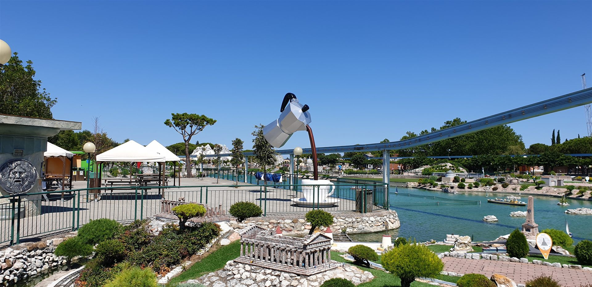
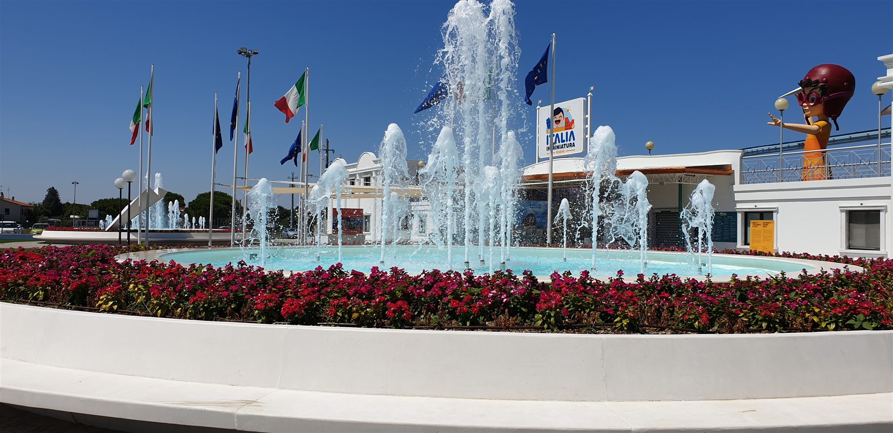
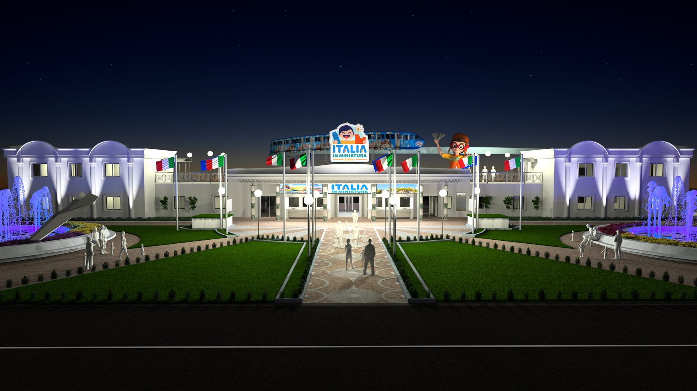
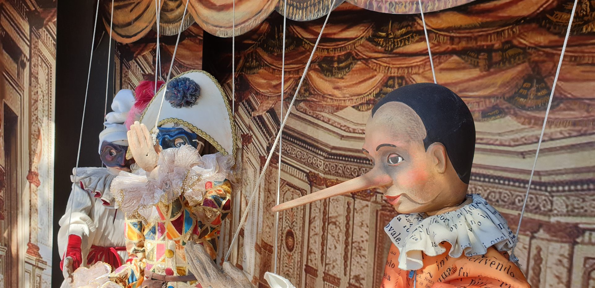
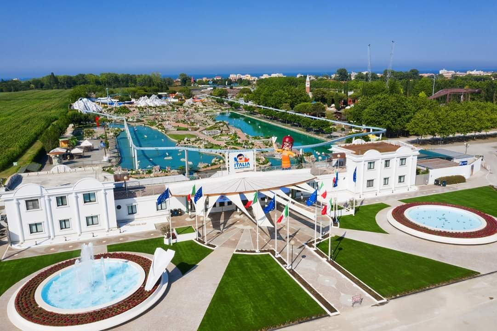

Parks · Rimini · 2020
Italia in
Miniatura
Cristian Taraborrelli ha curato le scenografie per il restyling dello storico parco Italia in Miniatura di Rimini, con la direzione creativa di Alfredo Accatino per Filmmaster Events.
Un intervento che ha rinnovato l’identità scenografica di uno dei parchi tematici più amati d’Italia — tra cui la celebre sezione dedicata a Pinocchio — reinterpretando gli spazi con una visione contemporanea e immersiva.
Cristian Taraborrelli designed the scenography for the restyling of the historic Italia in Miniatura park in Rimini, under the creative direction of Alfredo Accatino for Filmmaster Events.
An intervention that renewed the scenic identity of one of Italy’s most beloved theme parks — including the famous section dedicated to Pinocchio — reinterpreting the spaces with a contemporary and immersive vision.
Cristian Taraborrelli a réalisé les décors pour le relooking du parc historique Italia in Miniatura à Rimini, sous la direction créative d’Alfredo Accatino pour Filmmaster Events.
Une intervention qui a renouvelé l’identité scénographique de l’un des parcs à thème les plus aimés d’Italie — dont la célèbre section dédiée à Pinocchio — réinterprétant les espaces avec une vision contemporaine et immersive.
La Visione — La scenografia incontra i parchi tematici
In Italia pochissimi scenografi hanno nel proprio curriculum un lavoro sui parchi tematici. Il restyling di Italia in Miniatura rappresenta un progetto unico nel panorama della scenografia italiana: portare il linguaggio teatrale e la sensibilità narrativa del palcoscenico all’interno di uno spazio permanente, dove la scenografia non vive il tempo di uno spettacolo ma diventa architettura abitata dal pubblico ogni giorno.
Tra le installazioni più iconiche, un bambino alto 9,6 metri che tiene in mano un aereo in lamiera piegata: una scultura scenografica che comunica immediatamente la scala e lo spirito del parco, dove il gioco e l’immaginazione si fondono con la maestria artigianale della costruzione teatrale.
Very few set designers in Italy have theme park work in their portfolio. The restyling of Italia in Miniatura is a unique project in Italian scenography: bringing the theatrical language and narrative sensitivity of the stage into a permanent space, where the set design does not live for the duration of a show but becomes architecture inhabited by the public every day.
Among the most iconic installations, a 9.6-metre-tall child holding a bent sheet-metal aeroplane: a scenic sculpture that immediately communicates the scale and spirit of the park, where play and imagination merge with the craftsmanship of theatrical construction.
Très peu de scénographes en Italie comptent dans leur parcours un travail sur les parcs à thème. Le relooking d’Italia in Miniatura représente un projet unique dans le paysage de la scénographie italienne : porter le langage théâtral et la sensibilité narrative de la scène dans un espace permanent, où la scénographie ne vit pas le temps d’un spectacle mais devient une architecture habitée par le public au quotidien.
Parmi les installations les plus emblématiques, un enfant de 9,6 mètres de haut tenant un avion en tôle pliée : une sculpture scénique qui communique immédiatement l’échelle et l’esprit du parc, où le jeu et l’imagination se mêlent au savoir-faire de la construction théâtrale.
Il Parco — Un'icona italiana di mezzo secolo
Italia in Miniatura nasce nel 1970 a Viserba di Rimini per intuizione di Ivo Rambaldi: un parco a tema che riproduce in scala 1:25 e 1:50 i monumenti più iconici della Penisola e d'Europa, distribuiti su 85.000 m² di percorso pedonale e canali navigabili. Oggi conta oltre 272 riproduzioni monumentali — dalla Basilica di San Pietro al Duomo di Milano, dal Colosseo al Castello Sforzesco, da Venezia alle reggie europee — e accoglie ogni anno centinaia di migliaia di visitatori, in larga maggioranza famiglie con bambini.
Il restyling del 2020, commissionato a Filmmaster Events sotto la direzione creativa di Alfredo Accatino, è il primo intervento su scala scenografica nella storia del parco: non un nuovo monumento in miniatura ma una riscrittura dell'esperienza di visita attraverso elementi di scenografia teatrale fuori scala — sculture-personaggio, accessi tematizzati, segnaletica narrativa, illuminazione spettacolare. La logica è quella della regia: il parco non è più un catalogo di modellini ma una drammaturgia spaziale che accompagna il visitatore lungo un arco emotivo.
Italia in Miniatura was born in 1970 at Viserba di Rimini through the intuition of Ivo Rambaldi: a theme park reproducing the most iconic monuments of Italy and Europe at 1:25 and 1:50 scale, spread across 85,000 m² of pedestrian paths and navigable canals. Today it features over 272 monumental reproductions — from St Peter's Basilica to Milan's Cathedral, from the Colosseum to the Sforza Castle, from Venice to European royal palaces — and welcomes hundreds of thousands of visitors every year, mostly families with children.
The 2020 restyling, commissioned to Filmmaster Events under Alfredo Accatino's creative direction, is the first scenographic-scale intervention in the park's history: not another miniature monument but a rewriting of the visit experience through over-scale theatrical scenery — character-sculptures, themed entrances, narrative signage, spectacular lighting. The logic is directorial: the park is no longer a catalogue of models but a spatial dramaturgy that accompanies the visitor along an emotional arc.
Italia in Miniatura naît en 1970 à Viserba di Rimini par l'intuition d'Ivo Rambaldi : un parc à thème reproduisant à l'échelle 1:25 et 1:50 les monuments les plus icôniques de la Péninsule et de l'Europe, répartis sur 85 000 m² de parcours piétonnier et de canaux navigables. Il compte aujourd'hui plus de 272 reproductions monumentales — de la Basilique Saint-Pierre au Dôme de Milan, du Colisée au Château Sforzesco, de Venise aux résidences royales européennes — et accueille chaque année des centaines de milliers de visiteurs, en grande majorité des familles avec enfants.
Le relooking de 2020, commandé à Filmmaster Events sous la direction créative d'Alfredo Accatino, est la première intervention à l'échelle scénographique dans l'histoire du parc : non pas un nouveau monument en miniature mais une réécriture de l'expérience de visite à travers des éléments de scénographie théâtrale hors échelle — sculptures-personnages, accès thématisés, signalétique narrative, éclairage spectaculaire. La logique est celle de la mise en scène : le parc n'est plus un catalogue de maquettes mais une dramaturgie spatiale qui accompagne le visiteur le long d'un arc émotionnel.
Le Installazioni — Tre sculture iconiche
Il Bambino con l'aereo (9,6 m). La scultura-soglia del nuovo ingresso: un bambino fuori scala che tiene in mano un aereo di lamiera piegata, come quelli che i bambini lanciano dalle finestre. La figura accoglie il visitatore al varco del parco, capovolge la prospettiva (qui i grandi sono i piccoli, i piccoli sono i giganti) e dichiara la cifra del nuovo allestimento: scala invertita, sguardo restituito al bambino.
Il Pinocchio. La storica sezione dedicata alla fiaba di Collodi viene completamente ridisegnata: il burattino è trattato come personaggio teatrale, con un'ambientazione che attraversa la bottega di Geppetto, il paese dei balocchi, la pancia della balena. La scenografia restituisce a Pinocchio la sua dimensione di archetipo dell'identità italiana, in dialogo con le scene illustrate dalle generazioni Carlo Chiostri, Attilio Mussino, Roberto Innocenti.
Il Piazzale Centrale. Il fulcro del parco viene ripensato come piazza italiana a scala vera, con elementi scenotecnici (gradonate, arredi urbani fuori scala, illuminazione architetturale) che funzionano sia di giorno (foto-spot per famiglie) sia di notte (eventi spettacolari). È il punto in cui Italia in Miniatura smette di essere un parco di modellini per diventare un teatro all'aperto della memoria collettiva italiana.
The Child with the Aeroplane (9.6 m). The threshold-sculpture of the new entrance: an oversize child holding a folded sheet-metal aeroplane like those children throw from windows. The figure welcomes visitors at the park gate, inverts perspective (here adults are small, children are giants) and declares the signature of the new installation: inverted scale, gaze returned to the child.
The Pinocchio. The historic section dedicated to Collodi's fairy tale is entirely redesigned: the puppet is treated as a theatrical character, in a setting that crosses Geppetto's workshop, the Land of Toys, the belly of the whale. The set restores Pinocchio's status as an archetype of Italian identity, in dialogue with the illustrations of Carlo Chiostri, Attilio Mussino, Roberto Innocenti.
The Central Plaza. The park's hub is rethought as a real-scale Italian piazza, with scenic elements (steps, oversized urban furniture, architectural lighting) that work both during the day (family photo-spots) and at night (spectacular events). It is the point where Italia in Miniatura stops being a model park and becomes an open-air theatre of Italian collective memory.
L'Enfant à l'avion (9,6 m). La sculpture-seuil de la nouvelle entrée : un enfant hors échelle tenant un avion en tôle pliée, comme ceux que les enfants lancent par les fenêtres. La figure accueille le visiteur au seuil du parc, inverse la perspective (ici les adultes sont petits, les enfants sont géants) et déclare la signature du nouveau parcours : échelle inversée, regard rendu à l'enfant.
Le Pinocchio. La section historique dédiée au conte de Collodi est entièrement redéployée : la marionnette est traitée comme un personnage théâtral, dans un cadre qui traverse l'atelier de Geppetto, le Pays des Jouets, le ventre de la baleine. Le décor restitue à Pinocchio sa dimension d'archétype de l'identité italienne, en dialogue avec les illustrations des générations Carlo Chiostri, Attilio Mussino, Roberto Innocenti.
La Place Centrale. Le cœur du parc est repensé comme une piazza italienne à vraie échelle, avec des éléments scénotechniques (gradins, mobilier urbain hors échelle, éclairage architectural) qui fonctionnent à la fois le jour (photo-spots familiaux) et la nuit (événements spectaculaires). C'est le point où Italia in Miniatura cesse d'être un parc de maquettes pour devenir un théâtre à ciel ouvert de la mémoire collective italienne.
Per parchi tematici, family entertainment, turismo culturale
Lo studio porta il linguaggio scenografico teatrale all'interno dei parchi tematici, dei poli di family entertainment, dei siti di turismo culturale. Italia in Miniatura (Filmmaster Events 2020) è il caso di riferimento: un'istituzione storica del leisure italiano riscritta come drammaturgia spaziale. Lo stesso metodo si applica a operatori del settore (Mirabilandia, Gardaland, Movieland, Cinecittà World, parchi nazionali, siti UNESCO) e ai grandi gruppi del retail experiential (outlet, mall flagship, lifestyle hub). Per richieste di gara, brief di restyling, master plan: creativestriketeam@libero.it.
The studio brings theatre-scenic language inside theme parks, family-entertainment poles, cultural tourism sites. Italia in Miniatura (Filmmaster Events 2020) is the reference case: a historic institution of Italian leisure rewritten as spatial dramaturgy. The same method applies to sector operators (Mirabilandia, Gardaland, Movieland, Cinecittà World, national parks, UNESCO sites) and to the large retail-experiential groups (outlets, flagship malls, lifestyle hubs). For tenders, restyling briefs, master plans: creativestriketeam@libero.it.
Le studio porte le langage scénographique théâtral à l'intérieur des parcs à thème, des pôles de family entertainment, des sites de tourisme culturel. Italia in Miniatura (Filmmaster Events 2020) est le cas de référence : une institution historique du loisir italien réécrite comme dramaturgie spatiale. La même méthode s'applique aux opérateurs du secteur (Mirabilandia, Gardaland, Movieland, Cinecittà World, parcs nationaux, sites UNESCO) et aux grands groupes du retail experientiel (outlets, mall flagship, lifestyle hubs). Pour appels d'offres, briefs de relooking, master plans : creativestriketeam@libero.it.
Gallery






Tags